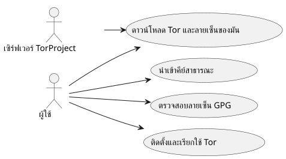
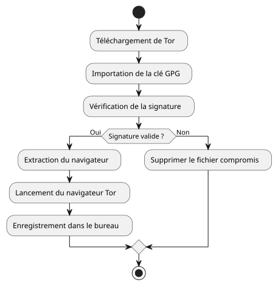
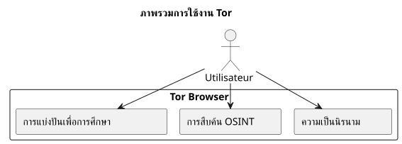

ติดตั้งและตรวจสอบ Tor Browser บน Ubuntu
เผยแพร่เมื่อ 05 October 2025
บทนำ
ในโลกที่ความเป็นส่วนตัวทางดิจิทัลถูกคุกคามมากขึ้นเรื่อย ๆ Tor Browser ยังคงเป็นเครื่องมือสำคัญสำหรับการรักษาความไม่ระบุตัวตนและเสรีภาพในการเข้าถึงข้อมูล อย่างไรก็ตาม สิ่งสำคัญอย่างยิ่งคือต้องไม่เรียกใช้ซอฟต์แวร์ที่ดาวน์โหลดมาโดยไม่มีการตรวจสอบความถูกต้องแท้จริงของมัน. บทความนี้นำเสนอวิธีการที่สมบูรณ์สำหรับ:
-
ดาวน์โหลด Tor Browser และลายเซ็นของมัน`.asc`
-
ตรวจสอบความถูกต้องของไฟล์ที่ดาวน์โหลด
-
ติดตั้งและเปิดใช้งาน Tor Browser บน Ubuntu
-
เพิ่มลงในเมนูเดสก์ท็อปเพื่อการใช้งานประจำวัน
-
สำรวจแหล่งทรัพยากรทางการศึกษาและ OSINT เชิงจริยธรรมผ่าน Tor
การดาวน์โหลด Tor และลายเซ็นของ Tor
สร้างโฟลเดอร์เฉพาะสำหรับเบราว์เซอร์ Tor:
mkdir -p ~/workspace/tipiak/tor
cd ~/workspace/tipiak/torจากนั้นดาวน์โหลดไฟล์อาร์ไคฟ์ของเบราว์เซอร์ Tor และลายเซ็น:
wget https://www.torproject.org/dist/torbrowser/14.5.7/tor-browser-linux-x86_64-14.5.7.tar.xz
wget https://www.torproject.org/dist/torbrowser/14.5.7/tor-browser-linux-x86_64-14.5.7.tar.xz.ascการตรวจสอบลายเซ็นด้วยวิธีการเข้ารหัสลับ
ขั้นตอนนี้คือขาดไม่ได้เพื่อให้แน่ใจว่าไฟล์ที่ดาวน์โหลดมานั้นมาจาก Tor Project จริงและไม่ถูกแก้ไข
1. นำเข้าคีย์สาธารณะของ Tor Project
gpg --auto-key-locate nodefault,wkd --locate-keys torbrowser@torproject.orgตรวจสอบว่าคีย์ถูกนำเข้าเรียบร้อยแล้ว:
gpg --list-keys torbrowser@torproject.org2. ตรวจสอบลายเซ็น
gpg --verify tor-browser-linux-x86_64-14.5.7.tar.xz.asc tor-browser-linux-x86_64-14.5.7.tar.xzหากทุกอย่างถูกต้อง ข้อความต่อไปนี้จะแสดงขึ้น:
gpg: Good signature from "Tor Browser Developers (signing key)"ในกรณีที่มีคำเตือนเกี่ยวกับคีย์ที่ยังไม่ได้รับการรับรอง นั่นเพียงหมายความว่าคุณยังไม่ได้ลงนามในคีย์ความเชื่อถือของ Tor Project แต่ลายเซ็นยังคงถูกต้อง
กรณีศึกษา: ลายเซ็นถูกต้องแต่คีย์ไม่ได้รับการรับรอง
เป็นเรื่องปกติที่จะพบข้อความเช่นนี้ในระหว่างการตรวจสอบ:
gpg --verify tor-browser-linux-x86_64-14.5.7.tar.xz.asc tor-browser-linux-x86_64-14.5.7.tar.xz
gpg: Signature faite le mar. 16 sept. 2025 14:26:26 CEST
gpg: avec la clef RSA CAAE408AEBE2288E96FC5D5E157432CF78A65729
gpg: Bonne signature de « Tor Browser Developers (signing key) <torbrowser@torproject.org> » [inconnu]
gpg: Attention : cette clef n'est pas certifiée avec une signature de confiance.
gpg: Rien n'indique que la signature appartient à son propriétaire.
Empreinte de clef principale : EF6E 286D DA85 EA2A 4BA7 DE68 4E2C 6E87 9329 8290
Empreinte de la sous-clef : CAAE 408A EBE2 288E 96FC 5D5E 1574 32CF 78A6 5729ข้อความนี้บ่งชี้ว่าลายเซ็นนั้น "ถูกต้อง" ในทางเทคนิค (ไฟล์ไม่ถูกแก้ไข) แต่ระบบ GPG ของคุณไม่สามารถ รับรองความน่าเชื่อถือ ของคีย์เองได้ เพื่อขจัดข้อสงสัยนี้ จำเป็นอย่างยิ่งที่จะต้องเปรียบเทียบลายนิ้วมือของคีย์หลัก (EF6E 286D DA85 EA2A 4BA7 DE68 4E2C 6E87 9329 8290) กับฉบับที่เผยแพร่บนเว็บไซต์ทางการของ Tor Project
ตามเว็บไซต์ทางการ ลายนิ้วมือที่คาดหวังคือ:`EF6E286DDA85EA2A4BA7DE684E2C6E8793298290`.
เนื่องจากลายนิ้วมือที่แสดงโดย`gpg`ตรงกับคีย์ของเว็บไซต์ทางการ*ทุกประการ* คุณจึงมั่นใจได้ว่าคีย์นั้นถูกต้องและไฟล์นั้นปลอดภัย คำเตือนเรื่อง "คีย์ที่ไม่ได้รับการรับรอง" จึงเป็นข้อมูลเกี่ยวกับการกำหนดค่า GPG ภายในเครื่องของคุณ ไม่ใช่เกี่ยวกับความถูกต้องของลายเซ็นหรือความเป็นของแท้ของไฟล์
ทำไมต้องตรวจสอบลายเซ็น?
การตรวจสอบลายเซ็น GPG เป็นการกระทำพื้นฐานด้านความปลอดภัยดิจิทัล ช่วยให้สามารถ:
-
รับประกันความแท้จริงของซอฟต์แวร์ที่ดาวน์โหลด
-
ป้องกันการติดตั้งไฟล์ที่ถูกแทรกแซงโดยผู้ไม่ประสงค์ดี
-
เข้าร่วมในอธิปไตยดิจิทัลส่วนบุคคล
-
ส่งเสริมวัฒนธรรมดิจิทัลที่มีความรับผิดชอบและมีจริยธรรม

การแตกไฟล์และการเปิด Tor Browser
แตกไฟล์บีบอัดที่ดาวน์โหลดมา:
tar -xvf tor-browser-linux-x86_64-14.5.7.tar.xz
cd tor-browserจากนั้นเปิดเบราว์เซอร์:
./start-tor-browser.desktopเมื่อเปิดใช้งานครั้งแรก หน้าต่างการกำหนดค่าจะเปิดขึ้นเพื่อสร้างการเชื่อมต่อกับเครือข่าย Tor
การผสานรวมเข้ากับเดสก์ท็อป Ubuntu
หากต้องการเพิ่ม Tor Browser ในเมนูแอปพลิเคชัน:
./start-tor-browser.desktop --register-appจากนั้นคุณสามารถ:
-
เปิด Tor Browser จากเมนูแอปพลิเคชัน
-
เพิ่มลงในรายการโปรดของ Dock
-
สร้างทางลัดแป้นพิมพ์หากต้องการ

สำรวจทรัพยากรทางการศึกษาด้วย Tor
Tor ไม่ใช่เพียงเครื่องมือสำหรับการปกปิดตัวตนเท่านั้น มันถือเป็นพอร์ทัลสำหรับเข้าถึงทรัพยากรด้านการศึกษาและการวิจัย โดยเฉพาะในสาขาต่าง ๆ ดังนี้:
-
OSINT (ข่าวกรองจากแหล่งเปิด)
-
การแบ่งปันเพื่อการศึกษาและโอเพนซอร์ส
-
https://archive.org(เข้าถึงผ่าน Tor เพื่อความเป็นส่วนตัวมากขึ้น)
-
https://github.com/(สามารถเข้าถึงได้ผ่าน Tor)
-
https://librarygenesis.pro(การเข้าถึงวรรณกรรมทางวิทยาศาสตร์แบบเสรี)
-
การถ่ายทอดความรู้และความเข้าใจเกี่ยวกับมนุษย์ในสังคมดิจิทัล
-
แหล่งทรัพยากรเกี่ยวกับวัฒนธรรมดิจิทัล เสรีภาพในการแสดงออก และการเข้าถึงองค์ความรู้
-
เอกสารความรู้แบบเสรีเกี่ยวกับความมั่นคงปลอดภัยไซเบอร์และจริยธรรมทางเทคโนโลยี
การอัปเดต Tor Browser
เพื่อให้มั่นใจถึงความปลอดภัยสูงสุด จำเป็นอย่างยิ่งที่จะต้องอัปเดต Tor Browser ให้เป็นเวอร์ชันล่าสุดอยู่เสมอ เบราว์เซอร์มีกลไกการอัปเดตอัตโนมัติซึ่งสามารถเรียกใช้งานได้จากบรรทัดคำสั่ง
จากไดเรกทอรีการติดตั้งของ Tor Browser เพียงรันสคริปต์เริ่มต้นใหม่:
cd ~/workspace/tipiak/tor/tor-browser
./start-tor-browser.desktopเมื่อเริ่มทำงาน Tor Browser จะตรวจสอบโดยอัตโนมัติว่ามีเวอร์ชันใหม่หรือไม่ หากมี มันจะดาวน์โหลดและติดตั้งเวอร์ชันนั้นให้คุณ
วิธีง่ายๆ นี้ช่วยให้มั่นใจได้ว่าคุณมีแพตช์ความปลอดภัยล่าสุดและการปรับปรุงใหม่ล่าสุดอยู่เสมอ ซึ่งจำเป็นสำหรับการท่องเว็บอย่างปลอดภัย
บทสรุป
การตรวจสอบไฟล์ดาวน์โหลดของตนเองเป็นนิสัยที่จำเป็นสำหรับทุกคนที่ต้องการดำเนินงานในสภาพแวดล้อมดิจิทัลที่ปลอดภัย การติดตั้ง Tor ด้วยวิธีที่ตรวจสอบแล้วนั้น คือปกป้องความสมบูรณ์ทางดิจิทัลของตนเอง, รักษาความไว้วางใจในซอฟต์แวร์เสรี, et เสริมสร้างความเป็นอิสระทางข้อมูลของตน.
ความมั่นคงปลอดภัยทางดิจิทัลเป็นการกระทำที่เกิดจากสำนึก ไม่ใช่ความหวาดระแวง

การอ้างอิง
-
เว็บไซต์อย่างเป็นทางการของ Tor Project:https://www.torproject.org/download/[https://www.torproject.org/download/]
-
เอกสารประกอบการตรวจสอบลายเซ็น:https://support.torproject.org/tbb/how-to-verify-signature/[https://support.torproject.org/tbb/how-to-verify-signature/]
-
เอกสาร Ubuntu :https://ubuntu.com[https://ubuntu.com]
-
คลังเอกสารทางการศึกษา :https://archive.org/details/opensource[https://archive.org/details/opensource]
|
บทความนี้เป็นส่วนหนึ่งของซีรีส์ ความปลอดภัยและความตระหนักรู้ทางดิจิทัล, ซึ่งมีวัตถุประสงค์เพื่อส่งเสริมแนวปฏิบัติที่มีความรับผิดชอบและมีคุณค่าทางการสอน เกี่ยวกับเครื่องมือเสรี |